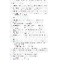
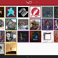
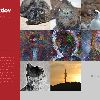
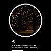
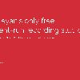
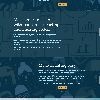
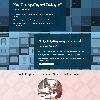
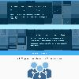
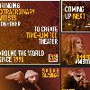
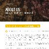

29 - 31 March 2018 | Wesleyan University
This Website
HTML, CSS, & Javascript
Built from scratch! Originally in WordPress, then raw HTML, then WordPress again, then Bootstrap, then Bootstrap (but different), and now this!
I like to constantly rebuild my website as a practice in web design, but this current draft is by far the most extensive and involved of any version I've previously had, both in terms of content and presentation. My site needs to house art and materials ranging from sounds to graphics to essays to random bits and more, and I designed the current site with this intent.
  
March 2017 - (ongoing) | Wesleyan University
Second Stage
Squarespace
Wesleyan's student-run theater production organization, sponsoring up to twelve student productions per semester.
I adopted this website from a previous student, so I focused on refining its presentation through graphic design and organization. I started to archive numerous productions, as well as write extensive helpful articles for students putting up shows for the first time.

September 2016 - (ongoing) | Wesleyan University
Red Feather Studios
WordPress
Wesleyan's only free student-run recording studio.
Red Feather's site has a lot of potential, but currently it mostly serves as a link to sign-up forms for sessions. I made sure that link was available on the front page, but I'm still working on getting more usability out of the site as a whole.

June - August 2017 | NYC
SmartTix
Bootstrap
Hired freelance to create three drafts to lead website and branding redesign. Organization's current website does not reflect my personal work, as I only created the attached drafts.
This project was my first time working with Bootstrap, and I wanted to create a simple attractive marketing page with a consistent brand aesthetic for SmartTix. I revised the previous color palette and created new graphic assets for the new site.
  
June - August 2017 | NYC
The 24 Hour Plays
WordPress
Moved company website from Drupal to WordPress to make daily operations much easier to accomplish. Re-branded organization, and created a style guide + website guide to aid in website maintenance after my departure.
I was the graphic designer for The 24 Hour Plays when I created the new website, so I specifically designed each page in adherence to the style guide I had developed for the company's rebranding. I also wanted to make sure my coworkers could update the website after my departure, so I wrote an extensive guide on how to update pages and make sure everything is running ok.
 